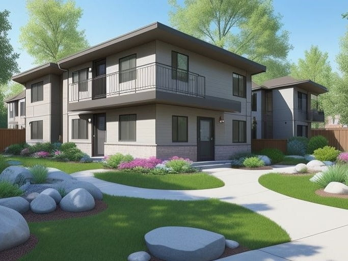
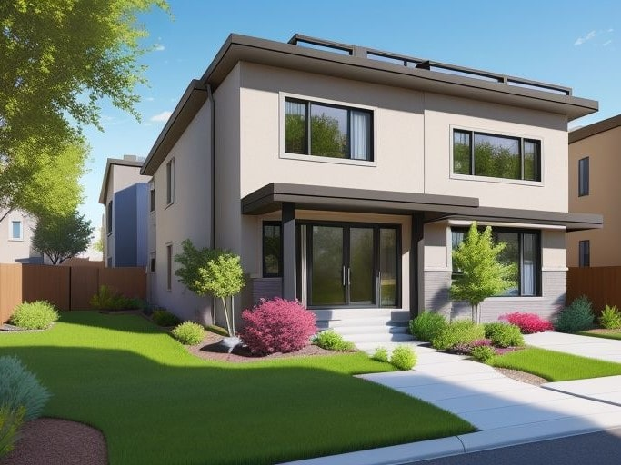
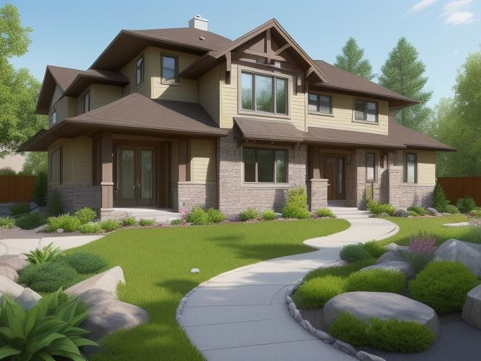
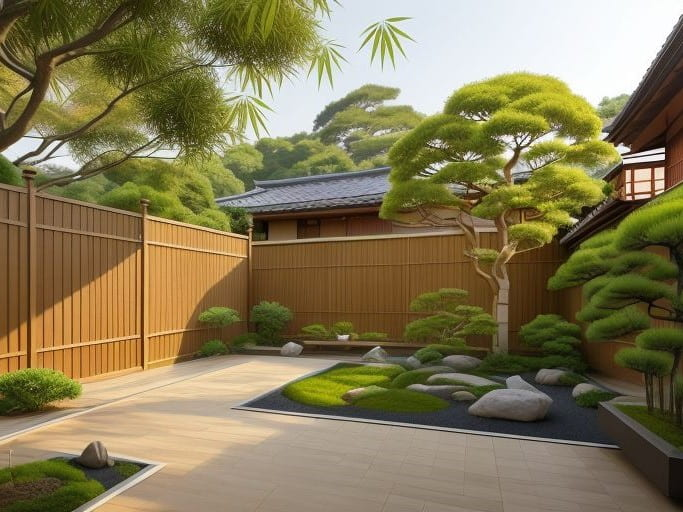
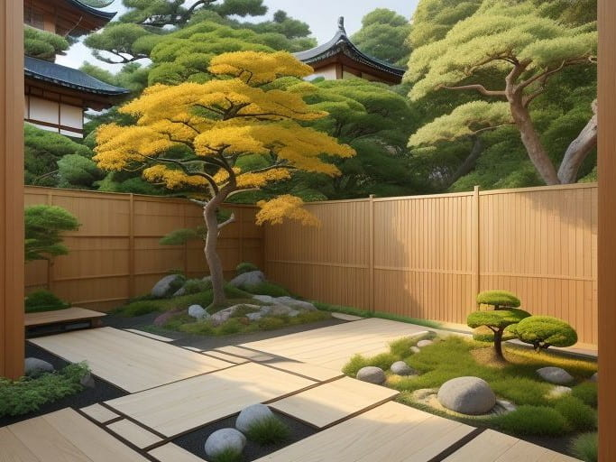
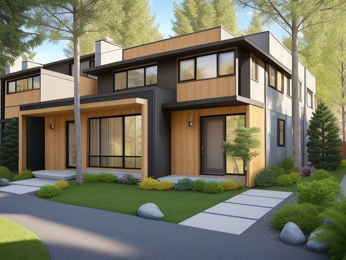
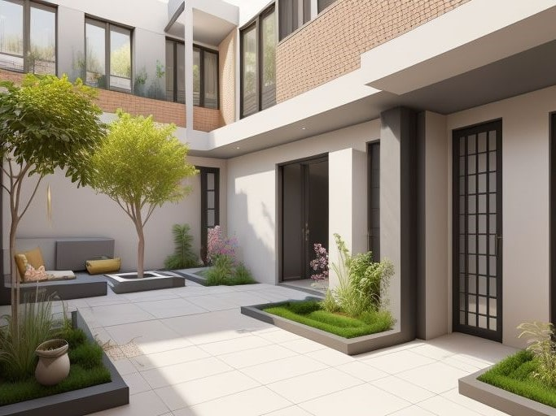

Get Quality Japanese Zen Dry Landscaping Services in Calgary
Options for Gardens and Landscapes
Ishidoro Zen Gardens Inc. aims to ensure that our clients' homes and public spaces remain healthy, beautiful, and functional — as a way to create a more sustainable, attractive, and inclusive Calgary. Therefore, depending on the scale of your project and local regulations, we may need to obtain permits. If your garden design includes water features or outdoor lighting, there will be utility costs to consider, unless you use solar powered features.

Design
Our team will design the blueprints and complete layout for your gardens and landscapes tailored to your specific needs. We will meticulously handle all aspects, starting from the initial site preparation to the finishing touches. Rest assured that we will procure quality materials and plants, guaranteeing that your gardens will be stunning, long-lasting, and eco-friendly.

Construction
Our team is dedicated to constructing gardens and landscapes according to the approved plans and designated budget. This may involve incorporating patios, walkways, and other elements. Our goal is to skillfully integrate aesthetics into our landscape construction services, resulting in functional and environmentally friendly spaces.

Maintenance
Our team is committed to providing complete care for your gardens and landscapes, improving their visual appeal and boosting their worth. Whether you have a Japanese style garden or a Zen dry garden, we have the expertise and dedication required to ensure that your priceless gardens thrive effortlessly, all while minimizing costs and efforts.

Consulting
Creating a Japanese Zen style garden can be a complex task, but you can be positive that our team will assist you through the entire process. We will offer direct supervision, comprehensive reports, and valuable suggestions whenever necessary. Our goal is to work closely with you to design a garden that genuinely embodies your unique style and preferences.
Seasonal Packages Also Available
The minimalist design of Zen gardens causes the observer to go deep within themselves, while reflecting upon the essence of nature and the universe. The gravel, rocks, boulders, stones, shrubs and moss are just the canvas for exploring these philosophical concepts. So, when creating your garden, take your time to explore different designs and choose the elements that resonate with you the most. You can hire our professional services either as a bundle or individually. Focus on creating a special space that will promote your peace and tranquility.

Tree Pruning and Shaping
Enhance the beauty of your landscape with our expert pruning and shaping services. Whether it is a tree, plant, or shrub, our skilled team will meticulously trim and shape them to perfection. With our competitive rate of $100 hourly, you can expect exceptional results. Please note that we require a minimum of three hours for each session to ensure thoroughness and precision.

Whole Garden Clean-Up
Say goodbye to the mess and transform your garden into a pristine oasis with our comprehensive services. Our skilled team will efficiently remove all garden weeds, debris, and junk, ensuring a clutter-free and immaculate space for you to enjoy. With a minimum of three hours per session, our affordable rate of $150 hourly guarantees exceptional value for your investment.

Seasonal Garden Maintenance
Our skilled team will take care of all your gardening needs, including planting, pruning, shaping, and garden clean-up. With our expertise, we guarantee exceptional results that will leave your garden looking stunning all year round. Our services are priced at an affordable rate of $200 hourly, with a minimum of three hours per visit. Don't miss out on the opportunity to elevate the beauty of your garden.

Yearly Garden Maintenance
From sourcing the right people for the job to installing sprinkler systems, fertilizing trees, plants, and shrubs, and effectively removing and controlling weeds, so that your garden will thrive like never before. Our services are priced at approximately $100 hourly, with a minimum of three hours per session. Trust us to reveal the true beauty of your garden with exceptional maintenance services.

Public and Legal Disclaimer
Customers can choose to either hire a local junk removal company themselves or let Ishidoro Zen Gardens Inc. handle all arrangements, including hiring a junk removal company. Additional charges apply in both cases. The Contractor has the discretion to make decisions and select from various options, always prioritizing the best interests of all parties.
Low Maintenance Landscaping Solutions
Our job at Ishidoro Zen Gardens is to provide authentic and affordable Japanese style garden design and maintenance services to Calgary residents, while attracting new customers, increasing brand awareness, and generating positive referrals. Whether you are a working professional, a retiree, or a stay-at-home parent, you can always find time to indulge in your passion for Japanese style landscaping.
In prior years, both the news and the media have consistently reported that a typical household with a lawn consumes in excess of ten thousand gallons of water per year (a phenomenon known as "the hidden water waste in lawn maintenance"). More interestingly is the fact that in dry climates like Calgary, especially during the hot summer months, many homeowners water their lawns more than necessary in an effort to maintaining their "green" appearance.